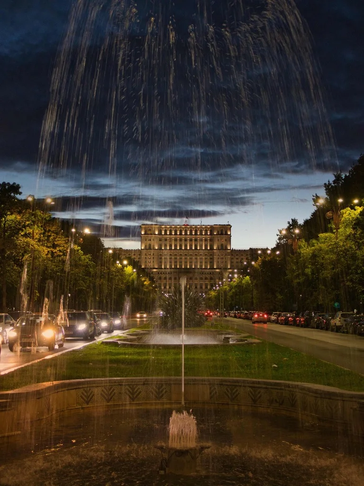
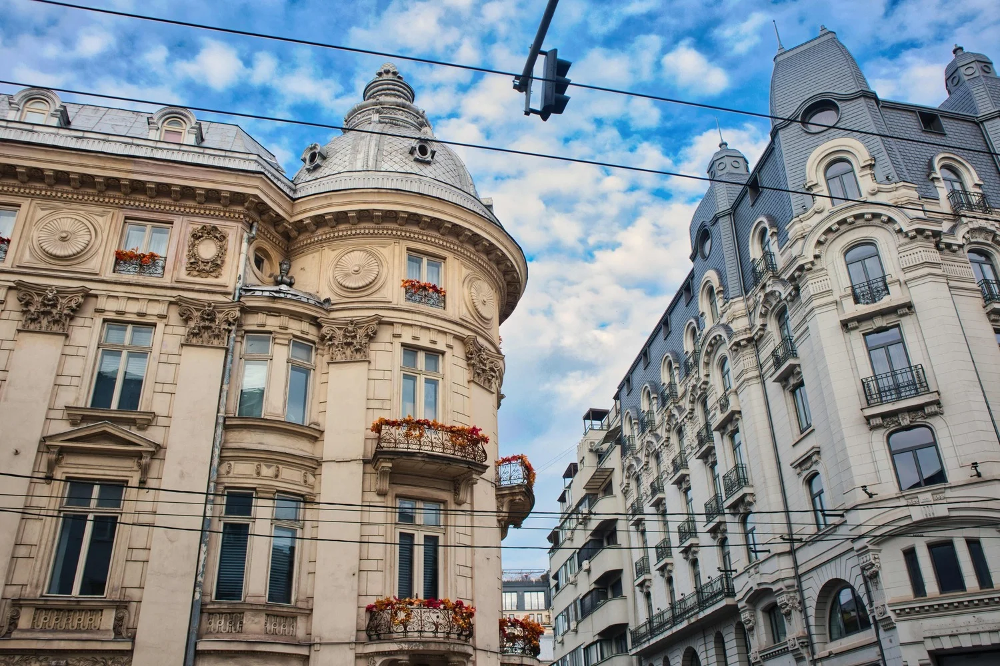
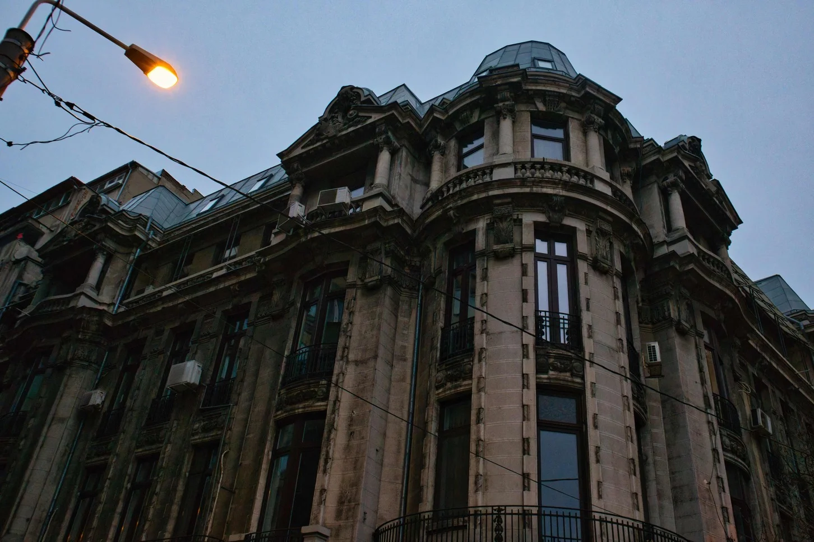
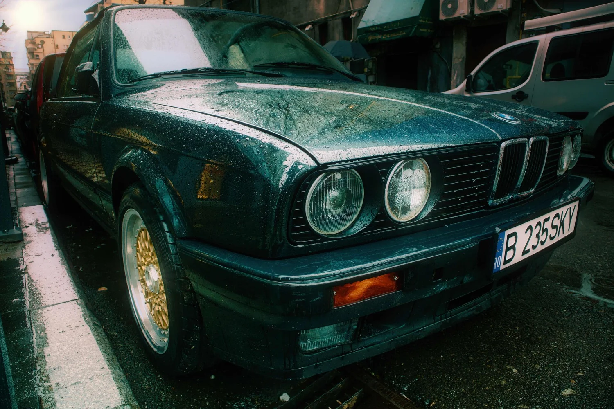
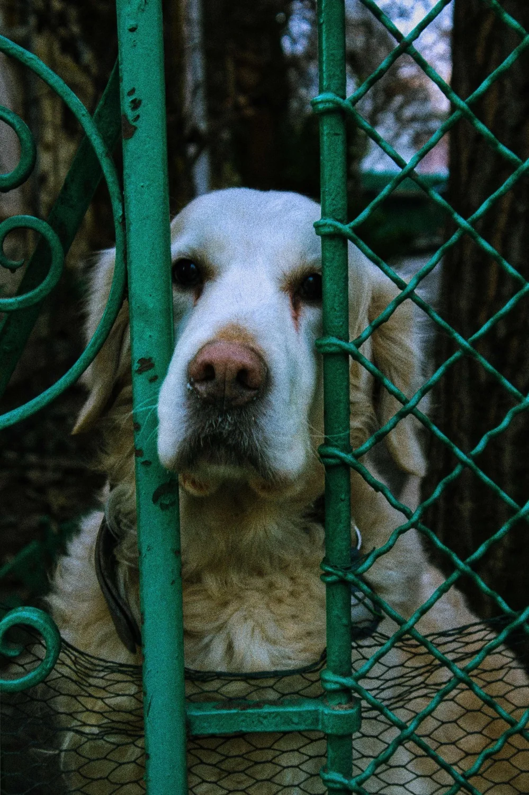

36 Exposures
Scroll to explore →
Full Catalog

ISO 1600 f/4.5 1/20s

ISO 200 f/6.3 1/125s
ISO 800 f/5.6 1/30s
ISO 1600 f/5.6 1/30s

ISO 3200 f/6.3 1/125s
ISO 6400 f/5.6 1/40s
ISO 3200 f/8 1/200s

ISO 800 f/3.5 1/100s

ISO 2000 f/5.6 1/125s
ISO 100 f/8 1/50s